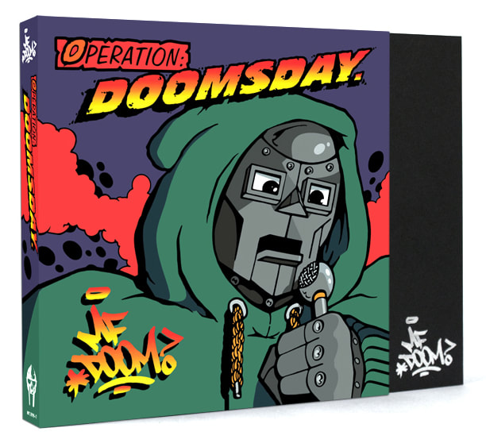
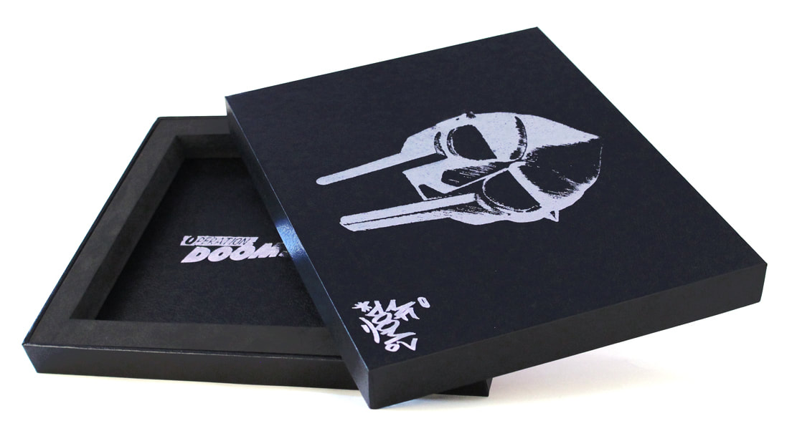
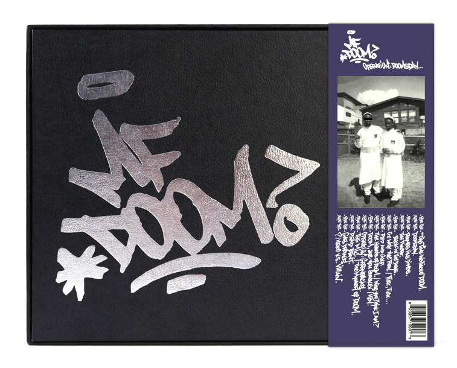
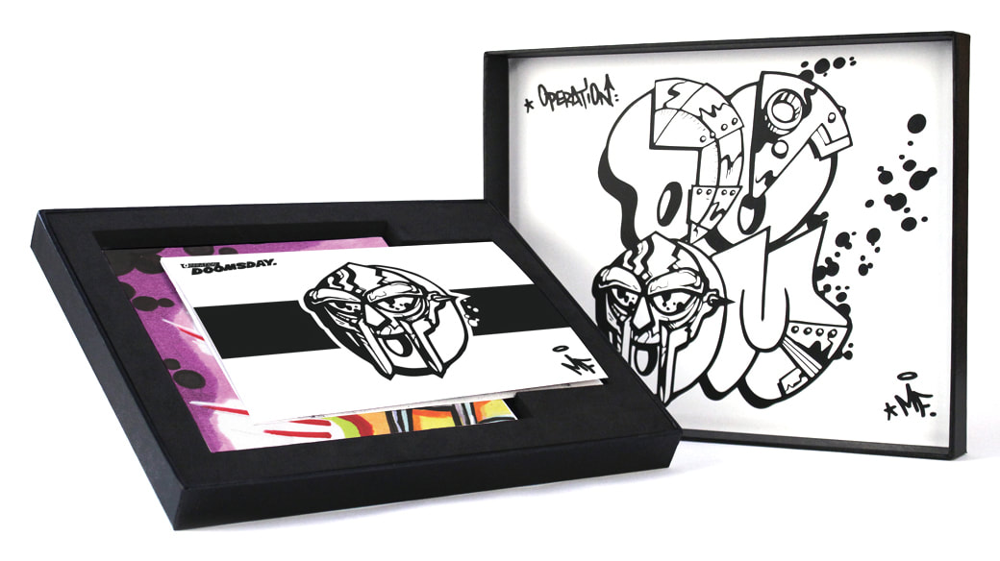

As the 1990s came to a close, a man who would come to rule the underground hip-hop universe for the next two decades appeared from depths that were darker than most of his fans would ever know: MF DOOM. The artist formerly known as Zev Love X of major-label-but-underground heroes KMD had disappeared from most fans’ view in around 1994 – after his brother and artistic co-producer Subroc was killed, and the group’s Black Bastards album was shelved by Elektra. By 1999 the album Operation: Doomsday appeared seemingly out of nowhere via Fondle Em Records, and fans who actively ran from the glitzier side of rap music ate it up like they had been on a hunger strike. Musically raw and at-times off-kilter, former singles were joined by a whole slew of new tunes. In addition to the dusty, wobbling music, the former Zev Love X completely changed up his vocal style on the tracks that would land on Doomsday, chopping his flow up and bringing a whole new approach to his formerly liquid, and often humorous lyricism.
This new 7-Inch Collection edition includes seven 7-Inches that run in order of the songs from the original issue (including interludes). The records are housed in a custom black leatherette outer-box that is laced with silver-foil renderings of DOOM’s legendary mask and bubble graffiti logo on the outside, and a never-seen-before DOOM drawing by the legendary Lord Scotch, the original artist behind the Operation: Doomsday art, on the inside. In addition to holding the 7-inch vinyl, the box also contains two metallic-silver colored 45 adapters, each a 3D rendering of DOOM’s gladiator mask. Picture sleeves for each of the seven pieces of wax all feature brand new work by Lord Scotch(aka KEO aka Scotch79th) as well: new hand-lettered track listings on one side, and incredible new color illustrations on the flip that, when laid side-by-side, fit together like puzzle pieces, to form one large image
 Each seven-inch comes in a unique vinyl color: Purple Transparent, Red Transparent, Lime Green Opaque, Orange Opaque, Yellow Transparent, Turquoise Opaque, and Classic Black. The set also includes a booklet, and is wrapped in a Japanese-style OBI strip that features the OG album cover in all of its glory. This absolutely unique package is limited to 1500 copies on colored vinyl, and they will go fast. If you are a hip-hop fan with any cred, you likely already own Operation: Doomsday. But this amazing new edition breathes new life into a true underground classic and makes it a necessary addition to anyone’s record shelf or mantle.
Week 14 of the Adult Swim Singles Program brings us exciting news with the release of a single from legendary rap group KMD titled "TRUE LIGHTYEARS" featuring Jay Electronica and DOOM, and the announcement of KMD's first album in almost 25 years, CRACK IN TIME. The forthcoming album will be released via METALFACE / NATURE SOUNDS
"TRUE LIGHTYEARS" is also the second notebook or track from The Missing Notebook Rhymes collection of music that Adult Swim and DOOM announced just last week which will include one song per week from DOOM's own upcoming albums as well as singles he is featured on over the course of the next 13 weeks